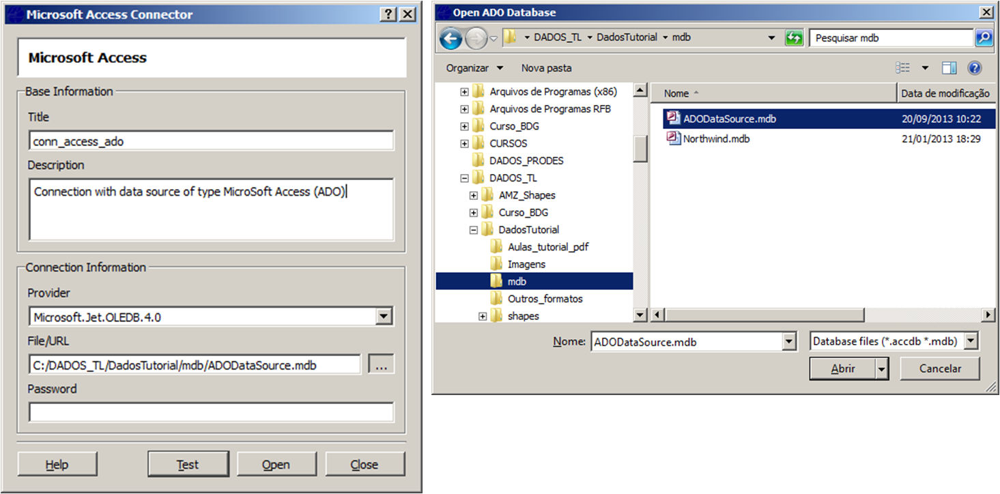
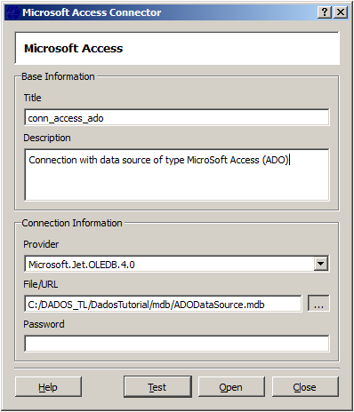
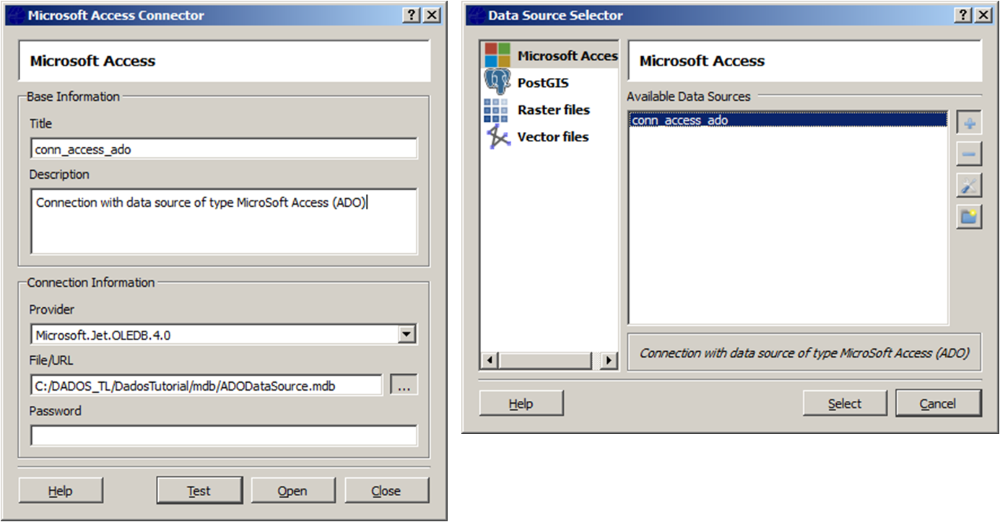

The Microsoft Access data source
connection is defined by a specific set of parameter. It is
accessed through the Data Source Selector.
To define Microsoft Access (*.mdb) as a data source in your application, fill the Title, the Connection Information with the Provider (is automatically filled) and File/URL with the path (...) to the data source (*.mdb ), and Password when applicable.


Open will make this connection available at Data Source Selector with the same title to be selected.
